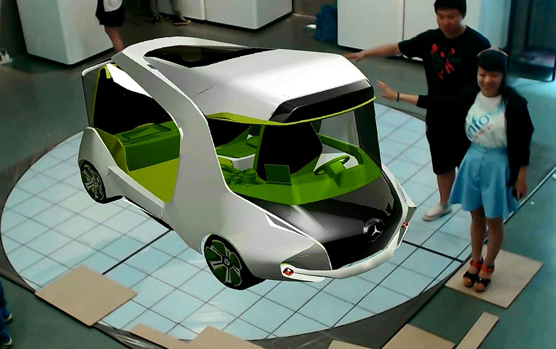
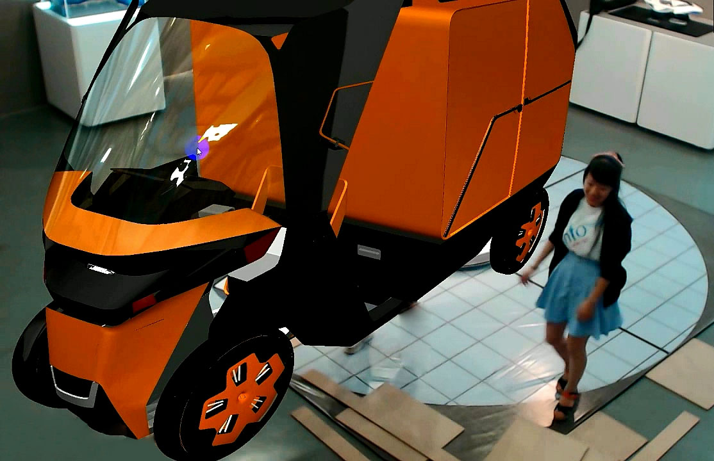
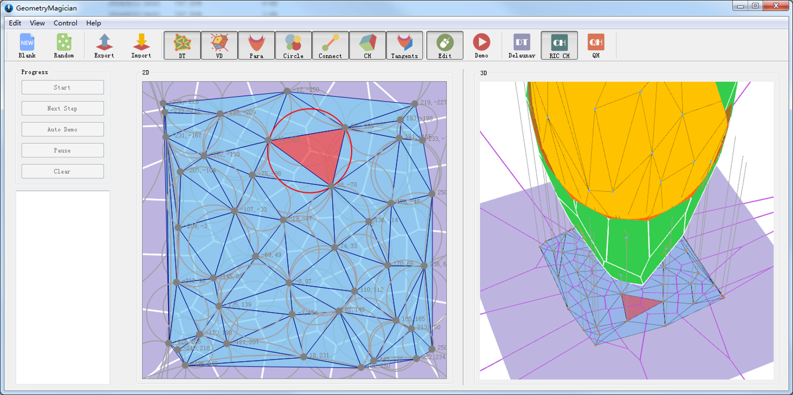
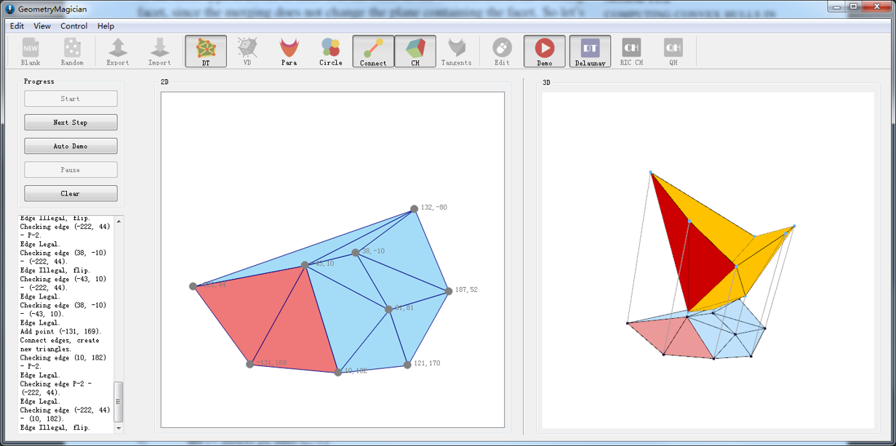
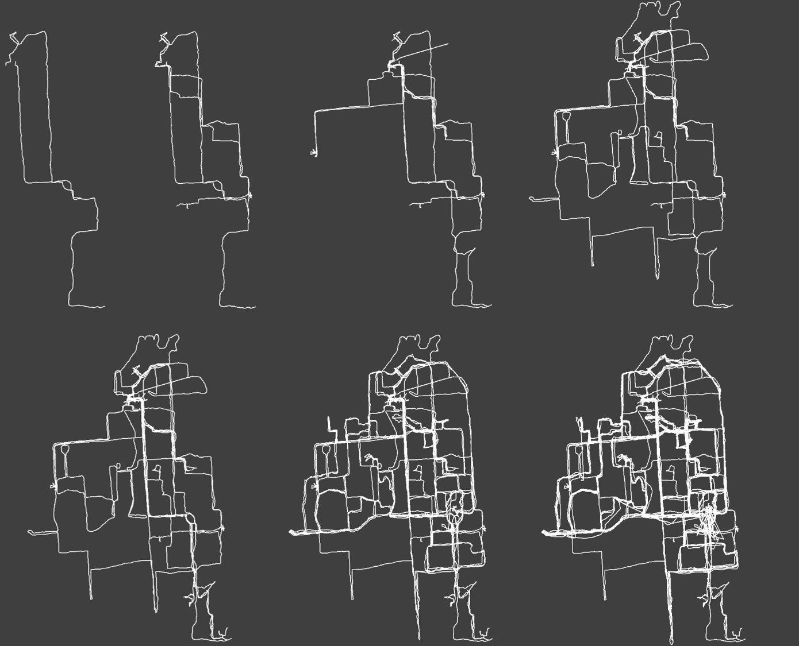
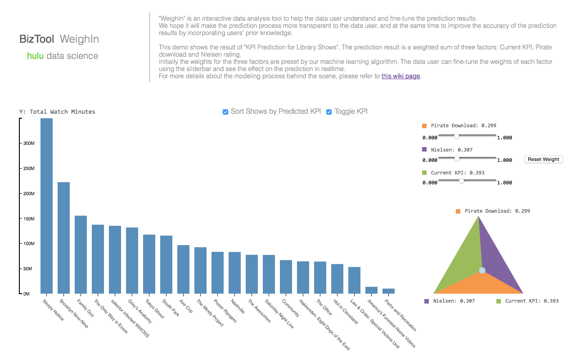
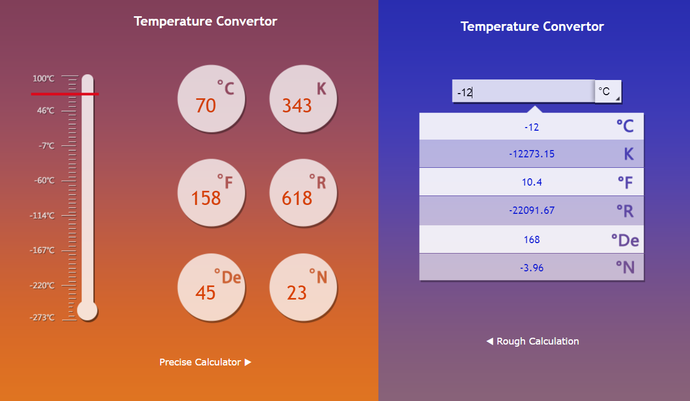

Comprehending Abstract Thoughts and Data
VehicleAR

Immersion systems, such as Augmented Reality and Virtual Reality, are not only novel display methods but also useful tools to explain abstract thoughts in a vivid form. For automotive students, it is hard and too expensive to build a real scale automobile model to show at their grad show and project defense. Exhibiting a reduced scale model is a common solution but can not provide an intuitive sense about the automotive appearance, design details, volume and size for audiences.

The project “VehicleAR” put a 1:1 scale detailed virtual digital vehicle model into exhibition space, which provided a tool for automotive designers to vividly explain their design ideas. Automotive design students from Academy of Arts & Design at Tsinghua University used “VehicleAR” at their grad show in 2014 to show their automotive design.
Interactive 3D Visualization of Voronoi and Delaunay

This project is a course implementation of Computational and Combinatorial Geometry instructed by Prof. Junhui Deng. In this project, we implement several algorithms of the convex hull, Delaunay triangulation, and Voronoi diagram, which includes Quick Hull algorithm, RIC (Random Incremental Construction)-Convex Hull algorithm, RIC-Delaunay algorithm, and Beach Line Voronoi algorithm.

We also visualize the algorithm process in real-time and provide an interactive user interface for user editing the input data and selecting elements to see the geometric relations between 2D and 3D visualized elements. The geometric generation process can be controlled and used as a teaching tool to demonstrate the algorithm process step by step.
Visualization of GPS Trace Data in Tsinghua

This project is an experiment we did in spare time in 2014. We gave 15 students GPS devices to collect their position data at Tsinghua University and then visualized the data to find useful information. We could obtain the users' positions, speed, trace etc. from the data.
There are some interesting points we dug out form the visualized data, 1) the most frequent used roads were Tsinghua Road, Xuetang Road, and Zhishan Road; 2) There was no fixed route to get into the Center Building; 3) Sometimes (40%-50% of the cases) the speed of turning around was faster than going straight.
WeighIn

In the year 2015, driven by the curiosity of how designers think and work, I applied for a UX designer internship in Hulu. During the internship, I engaged in several UX design projects to improve the user experience of Hulu website, apps and data analysis tools. Meanwhile, I conducted a project called “WeighIn” to create an interactive data analysis tool to help the Hulu data science team understand and fine-tune machine learning prediction results. We hope it will make the prediction process more transparent to the data user, and at the same time to improve the accuracy of the prediction results by incorporating users' prior knowledge. I designed an interactive fine-tuning solution, which transformed the parameters into insightful visual information.
Temperature Converter

This project is a course homework of Techniques of Human-Machine Interactive and Interface instructed by Prof. Yuanchun Shi. The project’s purpose was to provide a user-friendly interface for temperature converter and I used the color as an intuitive interpretation of different temperature scales.